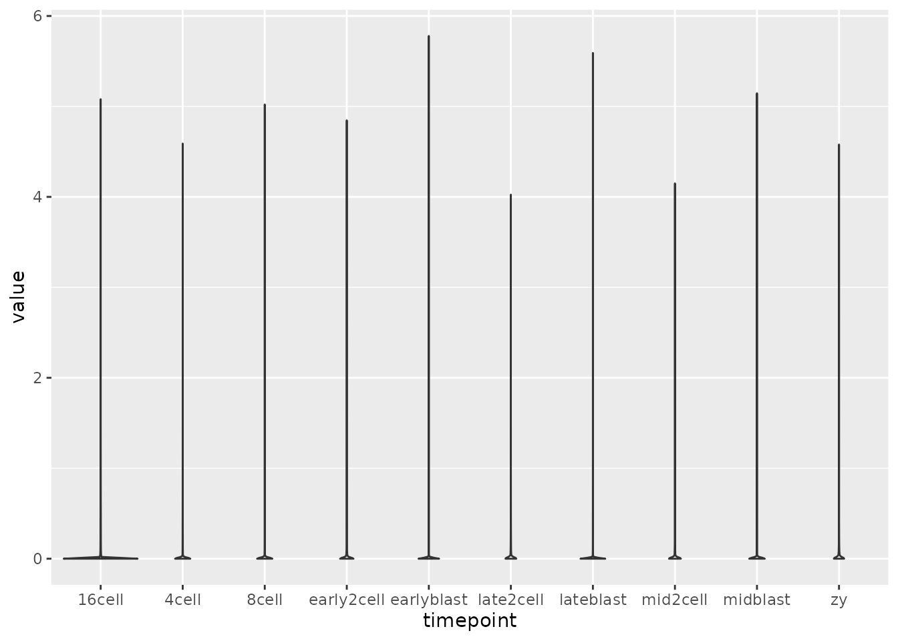
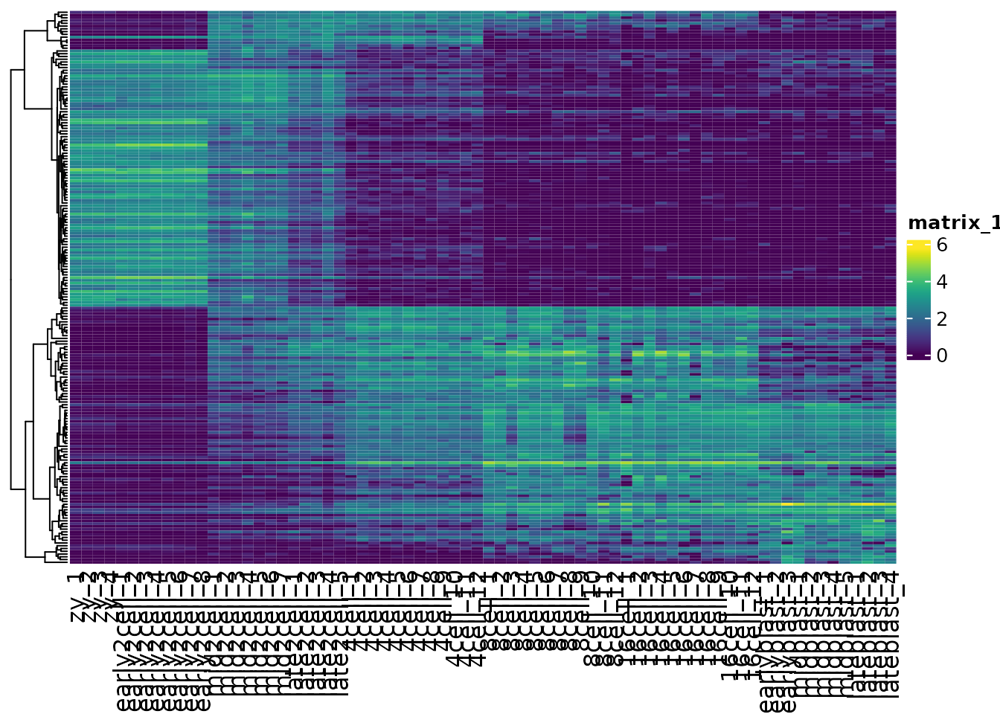

Goals:
Learn additional operations on matrices.
Demonstrate principles to effectively visualize large datasets with heatmaps.
Use clustering algorithms to identify patterns in the data.
Exploring datasets with PCA
Dataset description
For some of the exercises today we will be using a single cell RNA-seq dataset that is part of the pbda package. The esc_mat matrix contains read counts for each gene in each cell. The read counts are an abundance measurement for mRNAs in each cell.
This dataset contains 72 cells from mouse embryos at various stages of development (Single-Cell RNA-Seq Reveals Dynamic, Random Monoallelic Gene Expression in Mammalian Cells). This dataset, as well as many others are available in a preprocessed form from the Hemberg lab ( https://hemberg-lab.github.io/scRNA.seq.datasets/). Note that the number of cells has been reduced for complexity reasons.
Apply functions per row or per column of a matrix
A common task with matrices is to compute a row-wise or column-wise summary. Tidyverse verbs don’t naively support operations on matrices. base R provides some useful summary functions, as well as the matrixStats package.
colSums(esc_mat) %>% head()
#> zy_1 zy_2 zy_3 zy_4 early2cell_1
#> 30093033 25116127 31954663 17473603 22633227
#> early2cell_2
#> 23554335
rowSums(esc_mat) %>% head()
#> Hvcn1 Gbp7 Arrdc1 Ercc5 Mrpl15 Dclk1
#> 41740 15218 98903 19919 156510 42
summary(esc_mat[, 1:3])
#> zy_1 zy_2 zy_3
#> Min. : 0 Min. : 0 Min. : 0
#> 1st Qu.: 0 1st Qu.: 0 1st Qu.: 0
#> Median : 4 Median : 17 Median : 12
#> Mean : 1342 Mean : 1120 Mean : 1425
#> 3rd Qu.: 614 3rd Qu.: 527 3rd Qu.: 650
#> Max. :290222 Max. :188065 Max. :269403There are a few base R plotting functions that are very useful for exploratory analysis with matrices. For example the hist() function can be used to quickly generate a histogram from a matrix. Various clustering functions also provide a plot() method that can produce useful summaries. Often I use base R plots for interactive work, then use ggplot (or heatmaps) to make focused publication quality figures.
hist(esc_mat)Apply family of functions
How would we apply an arbitrary function to operate row-wise or column-wise?
In base R there is a function called apply.
?applyWe can use apply to calculate rowSums and colSums.
apply(esc_mat, 1, sum) %>% head()
#> Hvcn1 Gbp7 Arrdc1 Ercc5 Mrpl15 Dclk1
#> 41740 15218 98903 19919 156510 42
apply(esc_mat, 2, sum) %>% head()
#> zy_1 zy_2 zy_3 zy_4 early2cell_1
#> 30093033 25116127 31954663 17473603 22633227
#> early2cell_2
#> 23554335We can also define custom functions and use them in apply. (See also lapply, vapply, sapply, etc. for variants for operating on different data structures)
#predefine function
my_sum <- function(x){
sum(x) + 42
}
ex <- apply(esc_mat, 1, my_sum)
ex[1:5]
#> Hvcn1 Gbp7 Arrdc1 Ercc5 Mrpl15
#> 41782 15260 98945 19961 156552
# or use an anonymous function
ex2 <- apply(esc_mat, 1, function(a){
sum(a) + 42
})
ex2[1:5]
#> Hvcn1 Gbp7 Arrdc1 Ercc5 Mrpl15
#> 41782 15260 98945 19961 156552Filtering a matrix to exclude noisy low-abundance genes
Next we are going to remove genes (rows) with low values from the esc_mat matrix and save this smaller matrix as filtered_mat.
to_keep <- (rowSums(esc_mat > 0) > 10)
filtered_mat <- esc_mat[to_keep, ]
nrow(filtered_mat)
#> [1] 14635
# or alternativelyor using apply
Exercise
Normalize each the expression values for each cell. Divide each column by the total number of counts in each column, multiply by 10000, and log transform (use the log1p function). Save the new matrix as norm_mat.
# normalize a matrix
norm_mat <- apply(esc_mat, 2, function(x) x / sum(x))
norm_mat <- 10000 * norm_mat
norm_mat <- log(norm_mat + 1) # or log1p(norm_mat)
# another approach
lognorm <- function(vec){
norm_values <- 10000 * (vec / sum(vec))
log(norm_values + 1)
}
norm_mat <- apply(esc_mat, 2, lognorm)Converting matrices to data.frames and tibbles
# to data.frame
df <- as.data.frame(esc_mat)
df <- df[1:3, 1:5]
# to tibble
as_tibble(df, rownames = "gene")
#> # A tibble: 3 × 6
#> gene zy_1 zy_2 zy_3 zy_4 early2cell_1
#> <chr> <int> <int> <int> <int> <int>
#> 1 Hvcn1 3204 2290 2995 1600 2352
#> 2 Gbp7 1101 719 473 533 594
#> 3 Arrdc1 3574 2269 2481 1478 920
# or equivalently
rownames_to_column(df, "gene") %>%
as_tibble()
#> # A tibble: 3 × 6
#> gene zy_1 zy_2 zy_3 zy_4 early2cell_1
#> <chr> <int> <int> <int> <int> <int>
#> 1 Hvcn1 3204 2290 2995 1600 2352
#> 2 Gbp7 1101 719 473 533 594
#> 3 Arrdc1 3574 2269 2481 1478 920
# as one step
tbl_data <- esc_mat %>%
as.data.frame() %>%
as_tibble(rownames = "gene")
tbl_data[1:5, 1:5]
#> # A tibble: 5 × 5
#> gene zy_1 zy_2 zy_3 zy_4
#> <chr> <int> <int> <int> <int>
#> 1 Hvcn1 3204 2290 2995 1600
#> 2 Gbp7 1101 719 473 533
#> 3 Arrdc1 3574 2269 2481 1478
#> 4 Ercc5 1391 1601 1549 779
#> 5 Mrpl15 0 42 0 49Converting data.frames to matrices is also easily accomplished using as.matrix()
tbl_mat <- tbl_data %>%
as.data.frame()
rownames(tbl_mat) <- tbl_mat$gene
tbl_mat <- tbl_mat[, -1]
tbl_mat <- as.matrix(tbl_mat)
tbl_mat[1:3, 1:3]
#> zy_1 zy_2 zy_3
#> Hvcn1 3204 2290 2995
#> Gbp7 1101 719 473
#> Arrdc1 3574 2269 2481
class(tbl_mat)
#> [1] "matrix" "array"
# in one step
tbl_mat <- tbl_data %>%
as.data.frame() %>%
column_to_rownames("gene") %>%
as.matrix()Converting vectors to tibbles is also very useful.
# make a vector from colnames
col_ids <- colnames(tbl_mat)
#build tibble directly
tibble(sample_names = col_ids)
#> # A tibble: 72 × 1
#> sample_names
#> <chr>
#> 1 zy_1
#> 2 zy_2
#> 3 zy_3
#> 4 zy_4
#> 5 early2cell_1
#> 6 early2cell_2
#> 7 early2cell_3
#> 8 early2cell_4
#> 9 early2cell_5
#> 10 early2cell_6
#> # … with 62 more rows
#additional columns can be added as long as all of the vectors are the same length
tibble(sample_names = col_ids,
id = 1:72)
#> # A tibble: 72 × 2
#> sample_names id
#> <chr> <int>
#> 1 zy_1 1
#> 2 zy_2 2
#> 3 zy_3 3
#> 4 zy_4 4
#> 5 early2cell_1 5
#> 6 early2cell_2 6
#> 7 early2cell_3 7
#> 8 early2cell_4 8
#> 9 early2cell_5 9
#> 10 early2cell_6 10
#> # … with 62 more rowsgenerating data.frames
data.frame(sample_names = col_ids,
id = 1:72,
stringsAsFactors = FALSE) # very importantExercise
Tidy the norm_mat matrix into long format and extract out the timepoint information from the column name (e.g. zy, early2cell, etc.). Plot the expression values for each time point (geom_violin or geom_boxplot).
tidy_mat <- norm_mat %>%
as.data.frame() %>%
as_tibble(rownames = "gene") %>%
pivot_longer(cols = -gene, names_to = "sample") %>%
separate(sample, c("timepoint", "rep"), sep = "_")
ggplot(tidy_mat, aes(timepoint, value)) +
geom_violin() 
Generating Heatmaps using ComplexHeatmap
How do we visualize this dataset to examine relationships between samples? Visualizing the entire matrix will be computationally expensive and likely completely unintepretable as it will obscure interesting patterns. Ideally we’d like to reduce the dataset to less than a few thousand genes for visualization.
How do we select which features to plot in a heatmap?
Use statistics to find features that are significant based on some hypothesis (i.e. run
DESeq2for RNA-seq).Pick features of interest related to the hypothesis.
Select features with high variance. Low variance features are probably not very interesting
Down sample the matrix to a smaller size
gene_variance <- apply(norm_mat, 1, var) %>%
sort(decreasing = TRUE)
# top 30 most variable genes
vargenes <- names(gene_variance)[1:30]
head(vargenes)
#> [1] "Zbed3" "LOC100502936" "C86187" "Btg4"
#> [5] "Alppl2" "Tcl1"
var_mat <- norm_mat[vargenes, ]
Heatmap(var_mat,
name = "log scale",
cluster_rows = FALSE,
cluster_columns = FALSE)
Use clustering techniques to naturally order the data.
var_mat <- norm_mat[vargenes, ]
Heatmap(var_mat,
name = "log scale",
cluster_rows = TRUE,
cluster_columns = FALSE)
Often visualizing gene expression abundance can obscure some patterns, as lower expression values are not as strongly represented. A common data transformation is mean-centering and scaling each gene. This is also known as a z-score.
(x - mean(x)) / sd(x)
By generating z-scores, the gene expression data now represents standard deviations away from the mean. A built in function in R called scale can generate z-scores. This is also easy to do using an apply function.
?scaleThe scale function performs scaling per column in a matrix. However, it is common in genomics for matrices to be represented with samples (i.e. cells) as columns and genes as rows. This is done as commonly the number of genes (i.e. features) is much greater than the number of samples, and so it is conviently (and computationally easier) to represent data in this format.
However, is this a tidy format?
Are the variables stored as rows or columns?
var_mat[1:3, 1:3]
#> zy_1 zy_2 zy_3
#> Zbed3 4.579253 4.329129 4.446267
#> LOC100502936 3.995553 4.024628 4.060731
#> C86187 3.900258 3.914178 4.026102
t(var_mat) %>% .[1:3, 1:3]
#> Zbed3 LOC100502936 C86187
#> zy_1 4.579253 3.995553 3.900258
#> zy_2 4.329129 4.024628 3.914178
#> zy_3 4.446267 4.060731 4.026102
zmat <- t(scale(t(var_mat),
center = TRUE,
scale = TRUE))
# confirm that columns are the same after scaling
all(colnames(zmat) == colnames(var_mat))
#> [1] TRUE
Heatmap(zmat,
name = "z-score",
cluster_rows = TRUE,
cluster_columns = FALSE)Multiple heatmaps can be generated and plotted together if they share genes. For example, if we wanted to compare the zscore values to the log expression values.
# save each heatmap as an object
h1 <- Heatmap(zmat,
name = "z-score",
cluster_rows = TRUE,
cluster_columns = FALSE)
h2 <- Heatmap(var_mat,
name = "log",
cluster_rows = TRUE,
cluster_columns = FALSE)
# use the + operator to combine
h1 + h2
Heatmaps can be saved in a variety of formats using built in r functions, pdf, png, svg, and jpeg. ggplots plots can be saved with ggsave or the cowplot wrapper save_plot.
pdf("figure1.pdf") # name of plot
h1 + h2 # code that generates the plot
dev.off() # saves the plot
png("figure1.png")
h1 + h2
dev.off()
svg("figure1.svg")
h1 + h2
dev.off()
tiff("figure1.tiff")
h1 + h2
dev.off()
p <- ggplot(mtcars, aes(cyl, mpg)) +
geom_point()
save_plot("mtcars.pdf", p)Exercises
Create a heatmap containing the top 200 variables genes, using log normalized data. Consult the help menu (?Heatmap) to generate a heatmap and save it to a file.
Your heatmap should be made in the following manner:
- cluster by row
- hide the rownames
- add a title to the legend
- add a title to the columns
What appears to be happening between the early2cell and mid2cell stages?
gene_variance <- apply(norm_mat, 1, var) %>%
sort(decreasing = T)
vargenes <- names(gene_variance)[1:200]
var_mat <- norm_mat[vargenes, ]
Heatmap(var_mat,
name = "log scale",
cluster_rows = TRUE,
show_row_names = FALSE,
cluster_columns = FALSE,
column_title = "Samples",
row_title = "Genes")
Clustering
Reviews:
blog post: You probably don’t understand heatmaps by Mick Watson.
By default many Heatmap packages perform clustering to aid in identifying patterns in the data.
We can see the euclidean distances between samples using dist.
dist(t(var_mat[1:5, 1:5]))
#> zy_1 zy_2 zy_3 zy_4
#> zy_2 0.2951908
#> zy_3 0.2006237 0.2611443
#> zy_4 0.3590522 0.1513323 0.3747836
#> early2cell_1 1.2826717 1.0289290 1.1796294 0.9800686The hierarchical clustering is performed by default in ComplexHeatmap using hclust with the output of dist as input. hclust provides a plotting method using plot() to visualized the results as a dendogram.
We can change the distance metric used for the Heatmap by changing the clustering_distance_rows argument. A correlation measure, for example Spearman, is not sensitive to abundance, and can recover the shared patterns in the data.
cor(var_mat[1:5, 1:5], method = "spearman")
#> zy_1 zy_2 zy_3 zy_4 early2cell_1
#> zy_1 1.0 1.0 1.0 0.9 0.3
#> zy_2 1.0 1.0 1.0 0.9 0.3
#> zy_3 1.0 1.0 1.0 0.9 0.3
#> zy_4 0.9 0.9 0.9 1.0 0.4
#> early2cell_1 0.3 0.3 0.3 0.4 1.0
# use pretty colors
vcols <- viridis::viridis(256)
Heatmap(var_mat,
col = vcols,
clustering_distance_rows = "spearman",
cluster_rows = TRUE,
cluster_columns = FALSE,
show_row_names = FALSE)
Heatmaps are also very useful for quickly examining the similarities between samples

Extracting out clusters
How do we select out individual clusters from hierachical clustering? How do we define clusters?
h1 <- Heatmap(var_mat,
col = vcols,
name = "log scale",
cluster_rows = TRUE,
show_row_names = FALSE,
cluster_columns = FALSE,
row_title = "Genes")
h1
First let’s generate the dendogram:
Next we can use cutree() to cut the tree into groups
?cutree
hclusters[1:5]
#> Zbed3 LOC100502936 C86187 Btg4 Alppl2
#> 1 1 1 1 2Now that we have assigned clusters we can replot our heatmaps split out by each cluster, using the split argument.
h1 <- Heatmap(var_mat,
col = vcols,
name = "log scale",
cluster_rows = TRUE,
show_row_names = FALSE,
cluster_columns = FALSE,
split = kclusters,
row_title = "Genes")
h1
K-means
K-means clustering is another simple, yet powerful clustering techinuqe. It also scales to much larger datasets than hierarchical clustering.
Kmeans is easily implemented using kmeans()
clusters <- kmeans(var_mat, centers = 5)
names(clusters)
#> [1] "cluster" "centers" "totss" "withinss"
#> [5] "tot.withinss" "betweenss" "size" "iter"
#> [9] "ifault"Cluster assignments can be extracted using $cluster
To recover a reproducible kmeans classification set a seed for the random number generator
Exercise:
Make a Heatmap split by each kmeans cluster
Use your tidying and ggplot skills to plot the gene expression values per cluster, by timepoint.
km <- kmeans(var_mat, centers = 5)
km_clusters <- km$cluster
Heatmap(
var_mat,
split = km_clusters,
show_row_names = FALSE,
cluster_columns = FALSE
)
cluster_df <- tibble(
gene = names(km_clusters),
cluster = km_clusters
)
tidy_mat <- var_mat %>%
as.data.frame() %>%
as_tibble(rownames = "gene")
plt_dat <- left_join(tidy_mat,
cluster_df,
by = "gene")
plt_dat %>%
pivot_longer(cols = zy_1:lateblast_4) %>%
mutate(name = str_remove(name, "_[0-9]")) %>%
ggplot(aes(name, value)) +
geom_violin(aes(fill = name)) +
facet_grid(~cluster) +
theme_cowplot() +
theme(axis.text = element_blank())